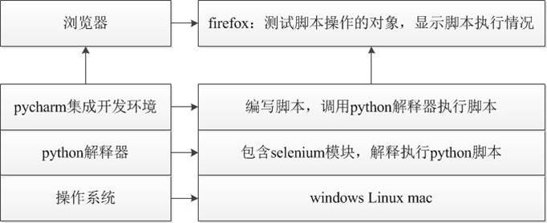

WebDriver概述
目标
1. 了解WebDriver概述
2. WebDriver环境搭建
1. 什么是WebDriver?
1. Webdriver (Selenium2）是一种用于Web应用程序的自动测试工具；
2. 它提供了一套友好的API；
3. Webdriver完全就是一套类库，不依赖于任何测试框架，除了必要的浏览器驱动;
说明：
API：应用编程接口说明（WebDriver类库内封装非常多的方法，要使用这些方法，就需要友好的调用命名规则）
思考
WebDriverAPI都支持哪些浏览器？
1.1 WebDriverAPI 支持的浏览器
1. Firefox （FirefoxDriver）【推荐-本阶段学习使用】
2. IE（InternetExplorerDriver）
3. Opera（OperaDriver）
4. Chrome （ChromeDriver）
5. safari（SafariDriver）
6. HtmlUnit (HtmlUnit Driver)
提示：
Firefox、Chrome：对元素定位和操作有良好的支持，同时对JavaScript支持也非常好。
IE:只能在windows平台运行，所有浏览器中运行速度最慢
HtmlUnit：无GUI(界面)运行，运行速度最快；
推荐原因：
1. Selenium IDE
2. FireBug
3. 对WebDriver API支持良好
思考：
我们知道API为应用编程时使用，那么它支持哪些编程语言来使用呢？
1.2 WebDriverAPI 支持的开发语言
官网文档：https://docs.seleniumhq.org/docs/03_webdriver.jsp
1. Java
2. Python
3. PHP
4. JavaScript
5. Perl
6. Ruby
7. C#
2. 为什么要学习WebDriver?
1. 自动化测试概念
2. WebDriver-定位元素
3. WebDriver-操作元素
3. 环境搭建
3.1 为什么要环境搭建？
1. 盖房子
2. MP3
3. 开发语言
3.2 基于Python环境搭建
Windows系统（在这里我们以Windows7为案例）需要安装的工具
1. Python 3.5（以上版本） --- python解释器 --- 用于解释执行python脚本
2. 安装selenium包 --- selenium库 --- 提供了众多的api用于实现对web页面的操作
3. 浏览器 --- 测试对象 --- 是web测试脚本的操作对象
4. 安装PyCharm --- 集成开发环境 --- 用于编辑、执行python脚本

说明：Python3 和PyCharm咱们上阶段课已使用，在这里不在重复；
4. selenium安装
说明：在安装selenium时，前提是Python3.5以上版本安装完毕且能正常运行
4.1 selenium 安装、卸载、查看命令
安装：pip install selenium==2.48.0
1). pip:通用的 Python 包管理工具。提供了对 Python 包的查找、下载、安装、卸载的功能。
2). install: 安装命令
3). selenium==2.48.0: 指定安装selenium2.48.0版本（如果不指定版本默认为最新版本）
卸载：pip uninstall selenium
查看：pip show selenium
4.2 火狐浏览器【推荐】
1. FireFox 48以上版本
Selenium 3.X +FireFox驱动——geckodriver
2. Firefox 48 以下版本
Selenium2.X 内置驱动
4.3 IE浏览器(了解)
1. IE 9以上版本
Selenium3.X +IE驱动
2. IE 9以下版本
Selenium 2.X +IE驱动
4.4 谷歌浏览器
selenium2.x/3.x +Chrome驱动

4.5 浏览器-总结
各个驱动下载地址： http://www.seleniumhq.org/download/
1. 浏览器的版本和驱动版本要一致！
（如果是32bit浏览器而Driver是64bit则会导致脚本运行失败！）
2. 浏览器驱动下载好后需要添加Path环境便令中，或者直接放到Python安装目录，因为Python以添加到Path中
3. 推荐使用火狐浏览器
5. 总结
1. WebDriver是什么？
2. 为什么要搭建环境？
3. selenium 安装、卸载、查看命令
4. 为什么推荐火狐浏览器和火狐48版本以下